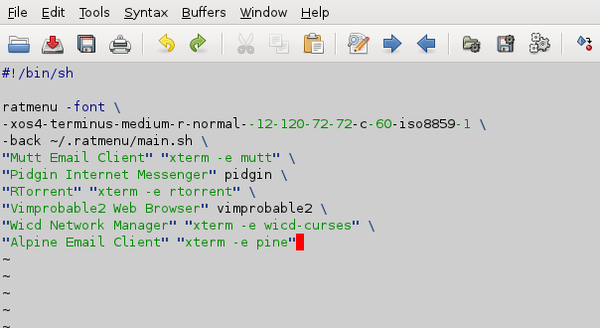

The directory ~/.ratmenu contains the main menu file
menu.sh, and the submenus it calls; all these are editable
scripts. We will now edit the Network menu using GVim.
GVim is in the menu, but try calling it using the colon
C-t :exec gvim ~/.ratmenu/multimedia.sh
or simply
C-t ! gvim ~/.ratmenu/multimedia.sh

Note that graphical applications are called directly, but command line programs need to be opened inside a terminal.
Use j and k to navigate to where you want
to add the entry for Mplayer2, type i to insert,
ESC to return to command mode, and :wq to write and
save. Test the change by typing
C-t r
The new item should already appear. If all is well, you may close the editor.